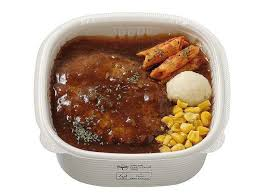
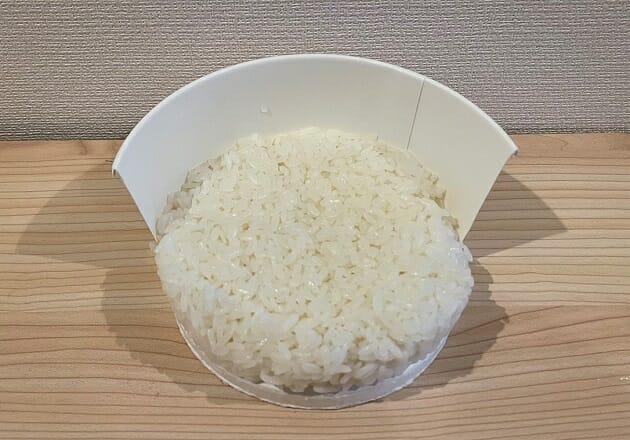

セブンで培った技術力
あげ底弁当つくれます。


セブンで培った第一印象を良くする力を活かしたいです
印象のあげ方
強み1. 面白さで誤魔化します
売り場が綺麗なだけで利益２倍の世界
特に、一人一人のお客さんに短時間でも心から向き合うことを意識していました
ストレス解消に色んな楽しい話を提供できます
強み2. 雑務で良い人感を与えます
従業員さんが一番気にするゴミ捨て、飲み物品出し、整理整頓
店舗ナンバーワンの精度でした！！
雑務、バンバン任せてください！！点数稼ぎになります！！
強み3. 24時間見栄を張れます
セブンでは40時間労働をしながら、接客していました
本当に限界を超えると、虹が見え気持ちよく失神できることを知っています
見栄を張ってるだけで、頭がパーによくなっています
この自己分析が合ってると思ったらいいねお願いします
そんな私、下手をすると、印象のみで終わるあげ底人生に
思い悩み、転職活動をしていたところ
もっとハードに働けそうな環境がセルミュラーでした